多根工作区
通过多根工作区，你可以在 Visual Studio Code 中处理多个项目文件夹。当你同时处理多个相关项目时，这非常有用。例如，你可能有一个包含产品文档的仓库，当你在更新产品源代码时，希望保持文档为最新状态。
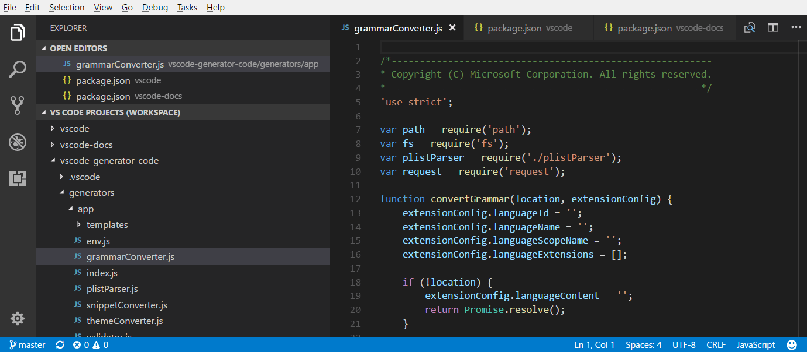
>注意：如果你想进一步了解 VS Code 的"工作区"概念，可以参阅什么是 VS Code"工作区"？除非你显式地创建了多根工作区，否则"工作区"就是指你的项目所在的单个根文件夹。
添加文件夹
向现有工作区添加另一个文件夹非常简单。有以下几种添加文件夹的方式：
将文件夹添加到工作区
文件 > 将文件夹添加到工作区 命令会弹出一个打开文件夹对话框，用于选择新文件夹。
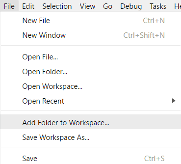
添加根文件夹后，资源管理器将在文件资源管理器中显示新文件夹作为根目录。你可以右键单击任意根文件夹，使用上下文菜单来添加或删除文件夹。
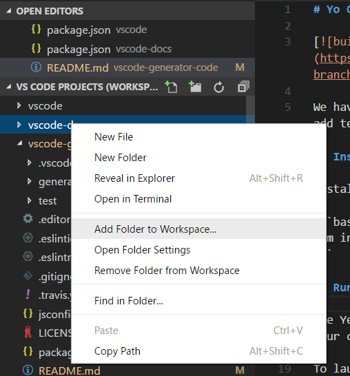
文件资源管理器应像以前一样工作和运行。你可以在根文件夹之间移动文件，并使用上下文菜单和资源管理器视图中提供的任何典型文件操作。
setting(files.exclude) 等设置在配置后将支持每个根文件夹，如果配置为全局用户设置，则会应用于所有文件夹。
拖放
你可以使用拖放功能将文件夹添加到工作区。将文件夹拖到文件资源管理器中，即可将其添加到当前工作区。你甚至可以选中并拖动多个文件夹。
>注意：将单个文件夹拖放到 VS Code 的编辑器区域仍将以单文件夹模式打开该文件夹。如果你将多个文件夹拖放到编辑器区域，则会创建一个新的多根工作区。
你还可以使用拖放功能重新排列工作区中的文件夹。
使用平台原生文件打开对话框进行多选
通过平台原生文件打开对话框打开多个文件夹，将创建一个多根工作区。
命令行 --add
将一个或多个文件夹添加到最近激活的 VS Code 实例中，形成一个多根工作区。
code --add vscode vscode-docs删除文件夹
你可以通过上下文菜单中的 从工作区删除文件夹 命令，将文件夹从工作区中删除。
工作区文件
当你添加多个文件夹时，它们最初会放在一个标题为 UNTITLED WORKSPACE 的工作区中，该名称将一直保留，直到你保存工作区。在你想要将工作区保存到永久位置（例如桌面上）之前，你不需要保存它。只要 VS Code 实例处于打开状态，未命名工作区就会一直存在。一旦你完全关闭了带有未命名工作区的实例，系统会询问你是否保存它（如果你打算将来再次打开它）：
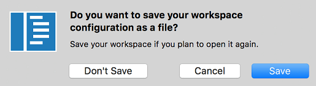
保存工作区时，将创建一个 .code-workspace 文件，文件名将显示在文件资源管理器中。
工作区另存为...
如果要将工作区文件移动到新位置，可以使用 文件 > 工作区另存为 命令，该命令将自动相对于新的工作区文件位置设置正确的文件夹路径。
打开工作区文件
要重新打开工作区，你可以：
- 在平台的资源管理器中双击
.code-workspace文件。 - 使用 文件 > 打开工作区 命令并选择工作区文件。
- 从 文件 > 最近打开 (
kb(workbench.action.openRecent)) 列表中选择工作区。- 工作区带有 (Workspace) 后缀，以区别于文件夹。
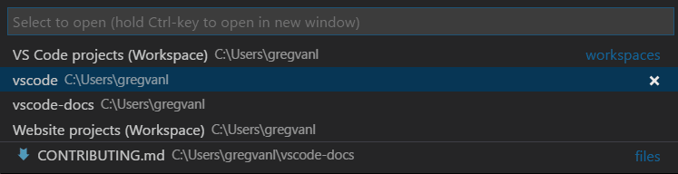
就像在 VS Code 中打开单个文件夹时有 关闭文件夹 命令一样，也有一个 关闭工作区 (kb(workbench.action.closeFolder)) 命令用于关闭活动工作区。
工作区文件架构
.code-workspace 文件的结构相当直接。你有一个包含绝对路径或相对路径的文件夹数组。当你希望共享工作区文件时，相对路径更佳。
你可以使用 name 属性来覆盖文件夹的显示名称，以便在资源管理器中为文件夹赋予更有意义的名称。例如，你可以将项目文件夹命名为"Product"和"Documentation"，从而根据文件夹名称轻松识别内容：
{
"folders": [
{
// Source code
"name": "Product",
"path": "vscode"
},
{
// Docs and release notes
"name": "Documentation",
"path": "vscode-docs"
},
{
// Yeoman extension generator
"name": "Extension generator",
"path": "vscode-generator-code"
}
]
}这会在资源管理器中产生如下显示效果：
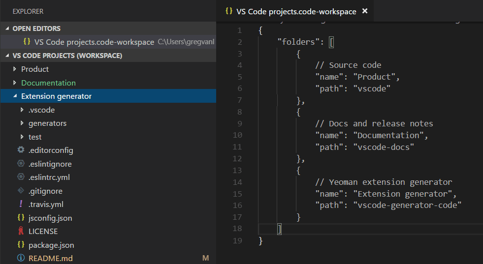
从上面的示例可以看出，你可以向工作区文件中添加注释。
工作区文件还可以包含 settings 下的工作区全局设置和 extensions 下的扩展推荐，我们将在下文讨论。
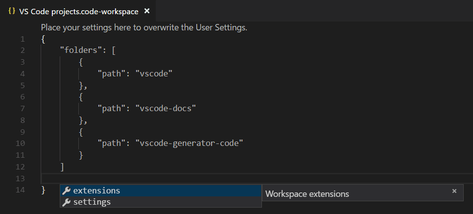
通用用户界面
编辑器
使用多根工作区时，VS Code 用户界面只有少量变化，主要是为了区分不同文件夹中的文件。例如，如果多个文件夹中存在文件名冲突，VS Code 将在选项卡标题中包含文件夹名称。
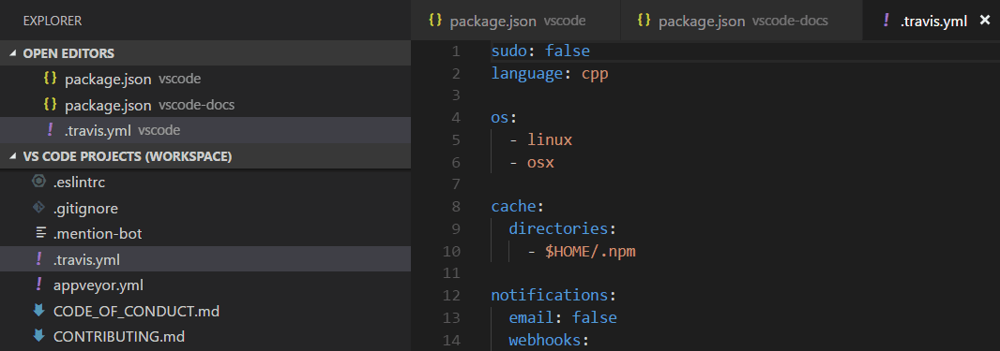
如果你希望始终在选项卡标题中显示文件夹，可以使用 setting(workbench.editor.labelFormat) 设置的 "medium" 或 "long" 值来显示文件夹或完整路径。
"workbench.editor.labelFormat": "medium"VS Code 用户界面中的 打开的编辑器 和 快速打开 (kb(workbench.action.quickOpen)) 等列表会包含文件夹名称。
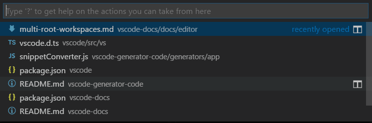
如果你正在使用文件图标主题并且活动主题支持，你将看到一个特殊的工作区图标。
下面你可以看到内置的 Minimal (Visual Studio Code) 文件图标主题中的工作区图标：
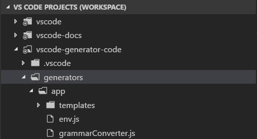
搜索
VS Code 功能（如全局搜索）可跨所有文件夹工作，并按文件夹对搜索结果进行分组。
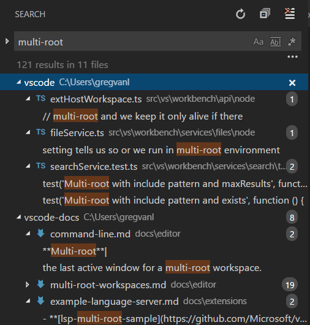
当你打开多根工作区时，可以通过在 要包含的文件 框中输入 ./ 语法来选择在单个根文件夹中进行搜索。例如，如果输入 ./project1/*/.txt，则会在 project1/ 根文件夹下搜索所有 .txt 文件。
设置
在一个工作区中使用多个根文件夹时，可以在每个根文件夹中有一个 .vscode 文件夹，用于定义应应用于该文件夹的设置。为避免设置冲突，在使用多根工作区时，仅应用资源（文件、文件夹）设置。影响整个编辑器的设置（例如，用户界面布局）将被忽略。例如，两个项目不能同时设置缩放级别。
用户设置与单文件夹项目一样受支持，你还可以设置将应用于多根工作区中所有文件夹的全局工作区设置。全局工作区设置将存储在你的 .code-workspace 文件中。
{
"folders": [
{
"path": "vscode"
},
{
"path": "vscode-docs"
},
{
"path": "vscode-generator-code"
}
],
"settings": {
"window.zoomLevel": 1,
"files.autoSave": "afterDelay"
}
}当你从单文件夹实例切换到多文件夹时，VS Code 会将第一个文件夹中的适用的编辑器范围设置添加到新的全局工作区设置中。
你可以通过设置编辑器轻松查看和修改不同的设置文件。设置编辑器选项卡允许你选择用户设置、全局工作区设置和各个文件夹的设置。
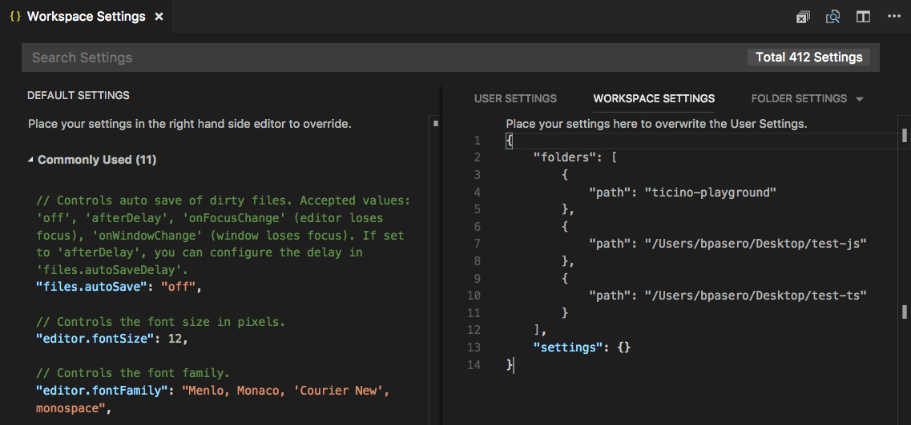
你还可以使用以下命令打开特定的设置文件：
- 首选项: 打开用户设置 - 打开你的全局用户设置
- 首选项: 打开工作区设置 - 打开工作区文件的设置部分。
- 首选项: 打开文件夹设置 - 打开活动文件夹的设置。
全局工作区设置会覆盖用户设置，而文件夹设置可以覆盖工作区设置或用户设置。
不支持的文件夹设置
不受支持的编辑器范围文件夹设置将在文件夹设置中显示为灰色，并会从 DEFAULT FOLDER SETTINGS 列表中过滤掉。你还将在设置前面看到一个信息图标。
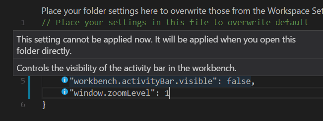
调试
使用多根工作区时，VS Code 会在所有文件夹中搜索 launch.json 调试配置文件，并显示时带有文件夹名称作为后缀。此外，VS Code 还会显示工作区配置文件中定义的启动配置。
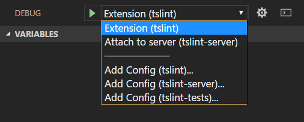
上面的示例显示了 TSLint 扩展的调试配置。其中有一个来自 tslint 扩展文件夹的 setting(launch) 配置，用于在 VS Code 扩展主机中启动该扩展，还有一个来自 tslint-server 文件夹的 attach 配置，用于将调试器附加到正在运行的 TSLint 服务器。
你还可以在 vscode-tslint 工作区中看到三个文件夹 tslint、tslint-server 和 tslint-tests 的 添加配置 命令。添加配置 命令将打开文件夹 .vscode 子文件夹中现有的 launch.json 文件，或创建一个新的文件并显示调试配置模板下拉菜单。
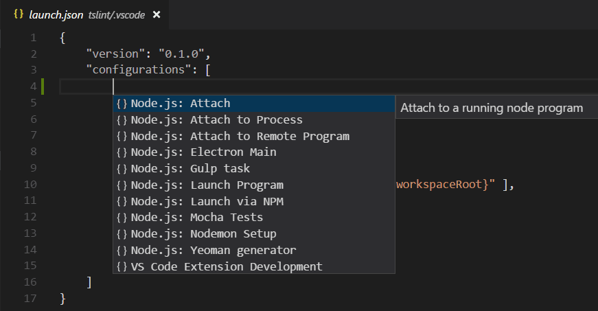
配置中使用的变量（例如 ${workspaceFolder} 或已弃用的 ${workspaceRoot}）将相对于它们所属的文件夹进行解析。可以通过在变量后附加根文件夹名称（用冒号分隔）来将变量作用域限定到每个工作区文件夹。
工作区启动配置
工作区作用域的启动配置位于工作区配置文件的 "launch" 部分（命令面板中的 工作区: 打开工作区配置文件）：
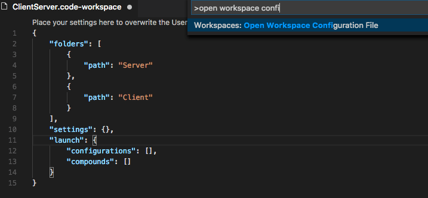
或者，可以通过启动配置下拉菜单中的"添加配置(工作区)"条目添加新的启动配置：
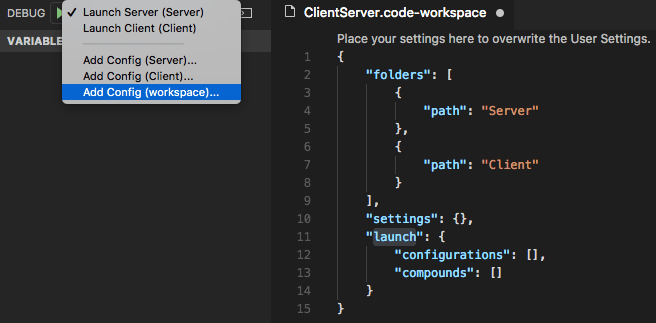
复合启动配置可以按名称引用各个启动配置，只要这些名称在工作区中是唯一的，例如：
"compounds": [{
"name": "Launch Server & Client",
"configurations": [
"Launch Server",
"Launch Client"
]
}]如果各个启动配置名称不唯一，可以使用更详细的"folder"语法指定限定文件夹：
"compounds": [{
"name": "Launch Server & Client",
"configurations": [
"Launch Server",
{
"folder": "Web Client",
"name": "Launch Client"
},
{
"folder": "Desktop Client",
"name": "Launch Client"
}
]
}]除了 compounds，工作区配置文件的 setting(launch) 部分还可以包含常规的启动配置。请确保所有使用的变量都显式地限定到特定文件夹，否则它们对工作区无效。你可以在变量参考中找到有关显式作用域变量的更多详细信息。
以下是一个启动配置示例，其中程序位于"Program"文件夹中，在单步调试时应跳过"Library"文件夹中的所有文件：
"launch": {
"configurations": [{
"type": "node",
"request": "launch",
"name": "Launch test",
"program": "${workspaceFolder:Program}/test.js",
"skipFiles": [
"${workspaceFolder:Library}/out/**/*.js"
]
}]
}任务
与 VS Code 搜索调试配置的方式类似，VS Code 也会尝试从工作区中所有文件夹的 gulp、grunt、npm 和 TypeScript 项目文件中自动检测任务，并搜索 tasks.json 文件中定义的任务。任务的位置通过文件夹名称后缀来指示。请注意，tasks.json 中定义的任务必须为 2.0.0 版本。
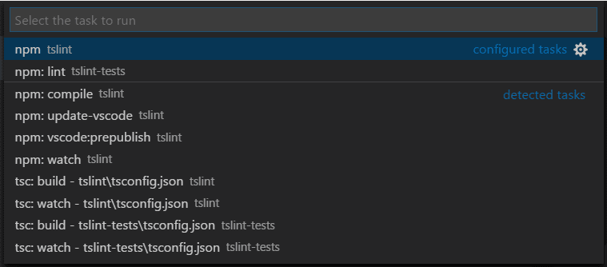
从上面的 TSLint 扩展工作区示例中，你可以看到有两个来自 tslint 和 tslint-tests 文件夹中 tasks.json 文件的 已配置任务，以及许多自动检测到的 npm 和 TypeScript 编译器 检测到的任务。
工作区任务配置
工作区作用域的任务位于工作区配置文件的 "tasks" 部分（命令面板中的 工作区: 打开工作区配置文件）。只有 "shell" 和 "process" 类型的任务才能在工作区配置文件中定义。
源代码管理
使用多根工作区时，有一个 SOURCE CONTROL PROVIDERS 部分，当你有多个活动仓库时，它会为你提供概览。这些仓库可以由多个 SCM 提供程序提供；例如，你可以将 Git 仓库与 Azure DevOps Server 工作区并排放置。当你在此视图中选择仓库时，你可以在下方看到源代码管理的详细信息。
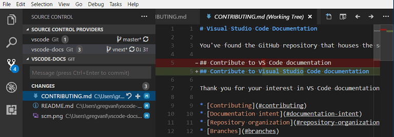
你可以使用 kbstyle(Ctrl+Click) 或 kbstyle(Shift+Click) 选择多个仓库。它们的详细信息将作为单独的区域显示在下方。
扩展
如果你是一位扩展作者，可以查阅我们的采用多根工作区 API 指南，了解 VS Code 多根工作区 API 以及如何让你的扩展在多个文件夹中良好运行。
以下是一些已采用多根工作区 API 的热门扩展。
注意：如果某个扩展尚未支持多文件夹，它仍将在多根工作区的第一个文件夹中运行。
扩展推荐
VS Code 通过文件夹 .vscode 子文件夹下的 extensions.json 文件支持文件夹级别的扩展推荐。你还可以通过将全局工作区扩展推荐添加到你的 .code-workspace 文件中来提供推荐。你可以使用 扩展: 配置推荐扩展(工作区文件夹) 命令打开工作区文件，并将扩展标识符（{publisherName}.{extensionName}）添加到 extensions.recommendations 数组中。
{
"folders": [
{
"path": "vscode"
},
{
"path": "vscode-docs"
}
],
"extensions": {
"recommendations": [
"eg2.tslint",
"dbaeumer.vscode-eslint",
"esbenp.prettier-vscode"
]
}
}后续步骤
- 什么是 VS Code"工作区"？ - 有关单文件夹和多根工作区的更多信息。
- 调试 - 了解如何为你的应用程序设置调试。
- 任务 - 任务让你可以在 VS Code 中运行编译器等外部工具。
常见问题
如何回到使用单个项目文件夹的状态？
你可以关闭工作区并直接打开文件夹，或者从工作区中删除该文件夹。
作为扩展作者，我需要做什么？
请参阅我们的采用多根工作区 API 指南。大多数扩展都可以轻松支持多根工作区。